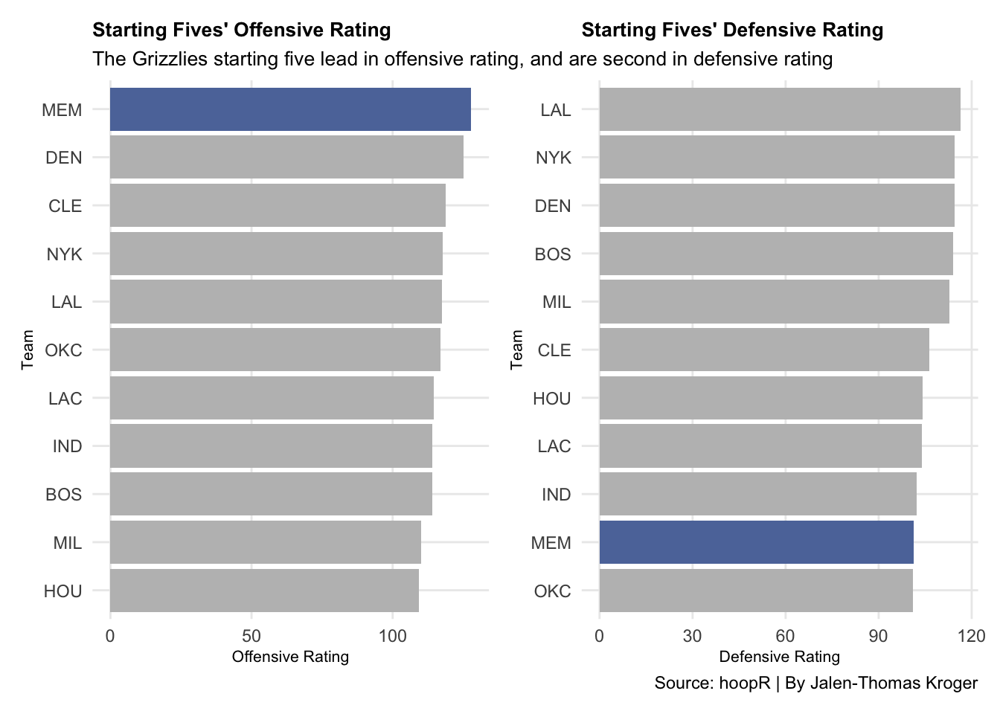
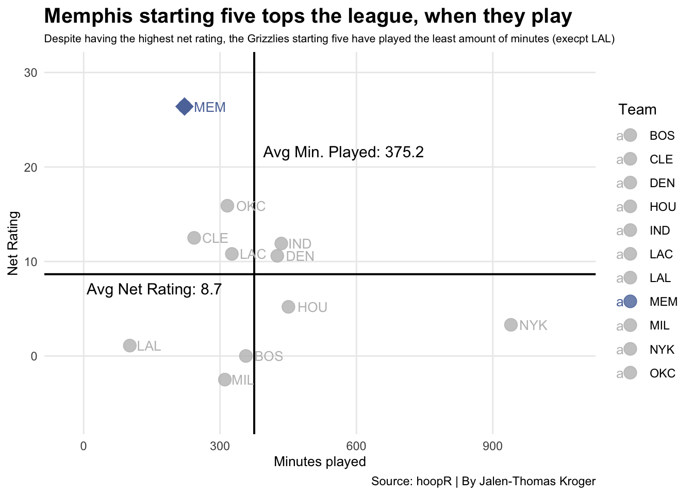
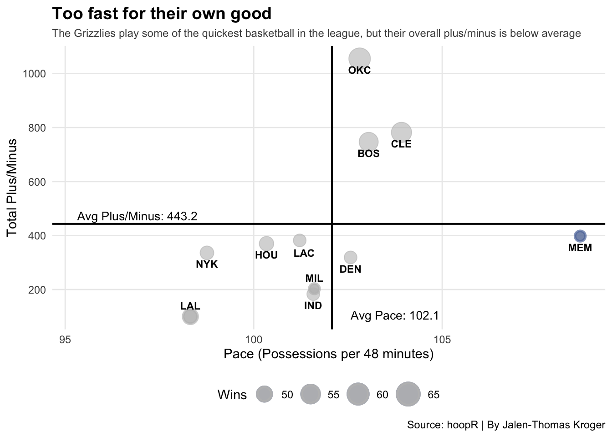

Just a month ago, the Memphis Grizzlies were tied for the No. 2 seed in the Western Conference; now, they are the No. 8 seed and are set to play the Warriors in the play-in tournament. When you look at the offensive and defensive ratings of the five best teams’ starting lineups from each conference, things get strange.
The offensive and defensive ratings measure points scored every 100 possessions (offensive) and points given up every 100 possessions (defensive).
East: CLE: D. Mitchell, J. Allen, M. Strus, D. Garland, E. Mobley | BOS: J. Holiday, K. Porziņģis, J. Brown, J. Tatum, D. White | IND: M. Turner, P. Siakam, A Nembhard, T. Haliburton, B. Mathurin | MIL: B. Lopez, D. Lillard, G. Antetokounmpo, T. Prince, A. Jackson Jr. | NYK: K. Towns, O. Anunoby, J. Hart, M. Bridges, J. Brunson |
West: OKC: I. Hartenstein, S. Gilgeous-Alexander, L. Dort, J. Williams, C. Wallace | HOU: F. VanVleet, D. Brooks, J. Green, A. Sengun, J. Smith Jr. | DEN: A. Gordon, N. Jokić, J. Murray, M. Porter Jr., C. Braun | LAC: J. Harden, N. Powell, K. Dunn, I. Zubac, D. Jones Jr. | LAL: L. James, D. Finney-Smith, L. Dončić, J. Hayes, A. Reaves | MEM: J. Jackson Jr., J. Morant, D. Bane, Z. Edey, J. Wells |
Code
library(tidyverse)library(hoopR)library(patchwork)lineups <-nba_leaguelineupviz(season =2024,season_type ="Regular Season",measure_type ="Base",per_mode ="Totals",group_quantity =5)newlineups <- lineups$LeagueLineupViz top_lineups <- newlineups |>filter(GROUP_NAME %in%c("D. Mitchell - J. Allen - M. Strus - D. Garland - E. Mobley", "J. Holiday - K. Porziņģis - J. Brown - J. Tatum - D. White", "M. Turner - P. Siakam - A. Nembhard - T. Haliburton - B. Mathurin", "B. Lopez - D. Lillard - G. Antetokounmpo - T. Prince - A. Jackson Jr.", "I. Hartenstein - S. Gilgeous-Alexander - L. Dort - J. Williams - C. Wallace", "F. VanVleet - D. Brooks - J. Green - A. Sengun - J. Smith Jr.", "A. Gordon - N. Jokić - J. Murray - M. Porter Jr. - C. Braun", "J. Harden - N. Powell - K. Dunn - I. Zubac - D. Jones Jr.", "J. Jackson Jr. - J. Morant - D. Bane - Z. Edey - J. Wells", "L. James - D. Finney-Smith - L. Dončić - J. Hayes - A. Reaves", "K. Towns - O. Anunoby - J. Hart - M. Bridges - J. Brunson")) |>select(GROUP_NAME, TEAM_ABBREVIATION, MIN, PACE, OFF_RATING, DEF_RATING, NET_RATING)top_lineups <- top_lineups |>mutate(MIN =as.numeric(MIN),PACE =as.numeric(PACE),OFF_RATING =as.numeric(OFF_RATING),DEF_RATING =as.numeric(DEF_RATING),NET_RATING =as.numeric(NET_RATING) )cleveland <- top_lineups |>filter( TEAM_ABBREVIATION =="CLE" )boston <- top_lineups |>filter( TEAM_ABBREVIATION =="BOS" )indy <- top_lineups |>filter( TEAM_ABBREVIATION =="IND" )bucks <- top_lineups |>filter( TEAM_ABBREVIATION =="MIL" )okc <- top_lineups |>filter( TEAM_ABBREVIATION =="OKC" )houston <- top_lineups |>filter( TEAM_ABBREVIATION =="HOU" )denver <- top_lineups |>filter( TEAM_ABBREVIATION =="DEN" )lac <- top_lineups |>filter( TEAM_ABBREVIATION =="LAC" )memphis <- top_lineups |>filter( TEAM_ABBREVIATION =="MEM" )lal <- top_lineups |>filter( TEAM_ABBREVIATION =="LAL" )newyork <- top_lineups |>filter( TEAM_ABBREVIATION =="NYK" )bar1 <-ggplot() +geom_bar(data=top_lineups, aes(x=reorder(TEAM_ABBREVIATION, OFF_RATING), weight=OFF_RATING)) +geom_bar(data=cleveland, aes(x=reorder(TEAM_ABBREVIATION, OFF_RATING), weight=OFF_RATING), fill="grey") +geom_bar(data=boston, aes(x=reorder(TEAM_ABBREVIATION, OFF_RATING), weight=OFF_RATING), fill="grey") +geom_bar(data=indy, aes(x=reorder(TEAM_ABBREVIATION, OFF_RATING), weight=OFF_RATING), fill="grey") +geom_bar(data=bucks, aes(x=reorder(TEAM_ABBREVIATION, OFF_RATING), weight=OFF_RATING), fill="grey") +geom_bar(data=okc, aes(x=reorder(TEAM_ABBREVIATION, OFF_RATING), weight=OFF_RATING), fill="grey") +geom_bar(data=houston, aes(x=reorder(TEAM_ABBREVIATION, OFF_RATING), weight=OFF_RATING), fill="grey") +geom_bar(data=denver, aes(x=reorder(TEAM_ABBREVIATION, OFF_RATING), weight=OFF_RATING), fill="grey") +geom_bar(data=lac, aes(x=reorder(TEAM_ABBREVIATION, OFF_RATING), weight=OFF_RATING), fill="grey") +geom_bar(data=memphis, aes(x=reorder(TEAM_ABBREVIATION, OFF_RATING), weight=OFF_RATING), fill="#5D76A9") +geom_bar(data=lal, aes(x=reorder(TEAM_ABBREVIATION, OFF_RATING), weight=OFF_RATING), fill="grey") +geom_bar(data=newyork, aes(x=reorder(TEAM_ABBREVIATION, OFF_RATING), weight=OFF_RATING), fill="grey") +coord_flip() +labs(title ="Starting Fives' Offensive Rating",subtitle ="The Grizzlies starting five lead in offensive rating, and are second in defensive rating",x ="Team",y ="Offensive Rating",color ="Team") +theme_minimal() +theme(plot.title =element_text(size =10, face ="bold"),axis.title =element_text(size =8), plot.subtitle =element_text(size=10), panel.grid.minor =element_blank() )bar2 <-ggplot() +geom_bar(data=top_lineups, aes(x=reorder(TEAM_ABBREVIATION, DEF_RATING), weight=DEF_RATING)) +geom_bar(data=cleveland, aes(x=reorder(TEAM_ABBREVIATION, DEF_RATING), weight=DEF_RATING), fill="grey") +geom_bar(data=boston, aes(x=reorder(TEAM_ABBREVIATION, DEF_RATING), weight=DEF_RATING), fill="grey") +geom_bar(data=indy, aes(x=reorder(TEAM_ABBREVIATION, DEF_RATING), weight=DEF_RATING), fill="grey") +geom_bar(data=bucks, aes(x=reorder(TEAM_ABBREVIATION, DEF_RATING), weight=DEF_RATING), fill="grey") +geom_bar(data=okc, aes(x=reorder(TEAM_ABBREVIATION, DEF_RATING), weight=DEF_RATING), fill="grey") +geom_bar(data=houston, aes(x=reorder(TEAM_ABBREVIATION, DEF_RATING), weight=DEF_RATING), fill="grey") +geom_bar(data=denver, aes(x=reorder(TEAM_ABBREVIATION, DEF_RATING), weight=DEF_RATING), fill="grey") +geom_bar(data=lac, aes(x=reorder(TEAM_ABBREVIATION, DEF_RATING), weight=DEF_RATING), fill="grey") +geom_bar(data=memphis, aes(x=reorder(TEAM_ABBREVIATION, DEF_RATING), weight=DEF_RATING), fill="#5D76A9") +geom_bar(data=lal, aes(x=reorder(TEAM_ABBREVIATION, DEF_RATING), weight=DEF_RATING), fill="grey") +geom_bar(data=newyork, aes(x=reorder(TEAM_ABBREVIATION, DEF_RATING), weight=DEF_RATING), fill="grey") +coord_flip() +labs(title ="Starting Fives' Defensive Rating",subtitle ="",caption="Source: hoopR | By Jalen-Thomas Kroger",x ="Team",y ="Defensive Rating",color ="Team") +theme_minimal() +theme(plot.title =element_text(size =10, face ="bold"),axis.title =element_text(size =8), plot.subtitle =element_text(size=8), panel.grid.minor =element_blank() )bar1 + bar2

When compared to the other starting fives of the best teams in the league, they boast the best offensive rating and second-best defensive rating. How can a starting five of an eight-seed have higher ratings than the top five-seeded teams from both conferences, except one? The answer lies in the minutes each starting five plays together.
Net rating measures the difference between offensive and defensive rating A positive net rating indicates a team is scoring more points per 100 possessions than their opponents, while a negative net rating signifies the opposite.
Code
library(tidyverse)library(hoopR)lineups <-nba_leaguelineupviz(season =2024,season_type ="Regular Season",measure_type ="Base",per_mode ="Totals",group_quantity =5)newlineups <- lineups$LeagueLineupViz top_lineups <- newlineups |>filter(GROUP_NAME %in%c("D. Mitchell - J. Allen - M. Strus - D. Garland - E. Mobley", "J. Holiday - K. Porziņģis - J. Brown - J. Tatum - D. White", "M. Turner - P. Siakam - A. Nembhard - T. Haliburton - B. Mathurin", "B. Lopez - D. Lillard - G. Antetokounmpo - T. Prince - A. Jackson Jr.", "I. Hartenstein - S. Gilgeous-Alexander - L. Dort - J. Williams - C. Wallace", "F. VanVleet - D. Brooks - J. Green - A. Sengun - J. Smith Jr.", "A. Gordon - N. Jokić - J. Murray - M. Porter Jr. - C. Braun", "J. Harden - N. Powell - K. Dunn - I. Zubac - D. Jones Jr.", "J. Jackson Jr. - J. Morant - D. Bane - Z. Edey - J. Wells", "L. James - D. Finney-Smith - L. Dončić - J. Hayes - A. Reaves", "K. Towns - O. Anunoby - J. Hart - M. Bridges - J. Brunson")) |>select(GROUP_NAME, TEAM_ABBREVIATION, MIN, PACE, OFF_RATING, DEF_RATING, NET_RATING)top_lineups <- top_lineups |>mutate(MIN =as.numeric(MIN),PACE =as.numeric(PACE),OFF_RATING =as.numeric(OFF_RATING),DEF_RATING =as.numeric(DEF_RATING),NET_RATING =as.numeric(NET_RATING) )nba_colors <-c("CLE"="grey", "BOS"="grey", "IND"="grey", "MIL"="grey", "OKC"="grey", "HOU"="grey", "DEN"="grey", "LAC"="grey", "MEM"="#5D76A9","LAL"="grey","NYK"="grey")top_lineups <- top_lineups |>mutate(MIN =as.numeric(MIN),NET_RATING =as.numeric(NET_RATING) )avg_net_rating <-mean(top_lineups$NET_RATING)avg_minutes <-mean(top_lineups$MIN)ggplot() +geom_point(data = top_lineups, aes(x = MIN, y = NET_RATING, color = TEAM_ABBREVIATION),size =4,alpha =0.8) +geom_hline(yintercept = avg_net_rating, color ="black",size =0.7) +geom_vline(xintercept = avg_minutes, color ="black",size =0.7) +annotate("text", x = avg_net_rating +-2.0, y = avg_net_rating +-1.5, label =paste("Avg Net Rating:", round(avg_net_rating, 1)),hjust =0,color ="black",size =4.0) +annotate("text", x = avg_minutes +20.0, y = avg_net_rating +13, label =paste("Avg Min. Played:", round(avg_minutes, 1)),hjust =0,color ="black",size =4.0) +geom_text(data = top_lineups,aes(x = MIN, y = NET_RATING, label = TEAM_ABBREVIATION, color = TEAM_ABBREVIATION),size =3.5,hjust =-0.3,vjust =0.5) +geom_point(data =filter(top_lineups, TEAM_ABBREVIATION =="MEM"),aes(x = MIN, y = NET_RATING),color ="#5D76A9", size =6,shape =18) +labs(title ="Memphis starting five tops the league, when they play",subtitle ="Despite having the highest net rating, the Grizzlies starting five have played the least amount of minutes (execpt LAL)",caption="Source: hoopR | By Jalen-Thomas Kroger",x ="Minutes played",y ="Net Rating",color ="Team") +theme_minimal() +theme(plot.title =element_text(size =15, face ="bold"),axis.title =element_text(size =10), plot.subtitle =element_text(size=8), panel.grid.minor =element_blank() ) +scale_x_continuous(expand =expansion(mult =c(0.1, 0.2))) +scale_y_continuous(expand =expansion(mult =c(0.2, 0.2))) +scale_color_manual(values = nba_colors)

The Grizzlies starting five have a net rating of 26.4, the best of the bunch, while only playing 222 minutes together, over 150 fewer minutes than the average amount for the best starting fives. The second-highest net rating is the Oklahoma City Thunder’s starting five, 15.9.
Memphis also plays fast-paced basketball, leading the league in pace, the measure of possessions per 48 minutes to see how fast a team plays. Maybe, to make up for their lack of time together, they’re making the time count by playing fast, but does playing fast help?
Code
library(tidyverse)library(hoopR)library(ggrepel)lineups <-nba_leaguelineupviz(season =2024,season_type ="Regular Season",measure_type ="Base",per_mode ="Totals",group_quantity =5)game_logs <-nba_leaguegamelog(season =2024,season_type ="Regular Season")newgamelogs <- game_logs$LeagueGameLognewgamelogs <- newgamelogs |>mutate(PLUS_MINUS =as.numeric(PLUS_MINUS), )newlineups <- lineups$LeagueLineupViznewlineups <- newlineups |>mutate(PACE =as.numeric(PACE), )lineup_stats <- newgamelogs |>group_by(TEAM_ABBREVIATION) |>summarize(wins =sum(WL =="W"),losses =sum(WL =="L"),win_pct = wins / (wins + losses),total_plus_minus =sum(PLUS_MINUS) )newlineup_stats <- lineup_stats |>filter(TEAM_ABBREVIATION %in%c("MEM", "DEN", "CLE", "NYK", "LAL", "OKC", "LAC", "IND", "BOS", "MIL", "HOU"))combined_data <-inner_join(newlineups, newlineup_stats, by ="TEAM_ABBREVIATION")topcombined_data <- combined_data |>filter(GROUP_NAME %in%c("D. Mitchell - J. Allen - M. Strus - D. Garland - E. Mobley", "J. Holiday - K. Porziņģis - J. Brown - J. Tatum - D. White", "M. Turner - P. Siakam - A. Nembhard - T. Haliburton - B. Mathurin", "B. Lopez - D. Lillard - G. Antetokounmpo - T. Prince - A. Jackson Jr.", "I. Hartenstein - S. Gilgeous-Alexander - L. Dort - J. Williams - C. Wallace", "F. VanVleet - D. Brooks - J. Green - A. Sengun - J. Smith Jr.", "A. Gordon - N. Jokić - J. Murray - M. Porter Jr. - C. Braun", "J. Harden - N. Powell - K. Dunn - I. Zubac - D. Jones Jr.", "J. Jackson Jr. - J. Morant - D. Bane - Z. Edey - J. Wells", "L. James - D. Finney-Smith - L. Dončić - J. Hayes - A. Reaves", "K. Towns - O. Anunoby - J. Hart - M. Bridges - J. Brunson"))memtopdata <- topcombined_data |>filter(TEAM_ABBREVIATION =="MEM")lactopdata <- topcombined_data |>filter(TEAM_ABBREVIATION =="LAC")miltopdata <- topcombined_data |>filter(TEAM_ABBREVIATION =="MIL")laltopdata <- topcombined_data |>filter(TEAM_ABBREVIATION =="LAL")topcombined_data <- topcombined_data |>mutate(PACE =as.numeric(PACE) ) lactopdata <-data.frame(TEAM_ABBREVIATION ="LAC",PACE =101, total_plus_minus =377, wins =50 )avg_plusminus <-mean(topcombined_data$total_plus_minus)avg_pace <-mean(topcombined_data$PACE)ggplot() +geom_point(data = topcombined_data, aes(x = PACE, y = total_plus_minus, size = wins),color ="grey",alpha =0.6 ) +geom_hline(yintercept = avg_plusminus, color ="black",size =0.7 ) +geom_vline(xintercept = avg_pace, color ="black",size =0.7 ) +annotate("text", x = avg_pace + .5,y =min(topcombined_data$total_plus_minus) +5,label =paste("Avg Pace:", round(avg_pace, 1)),hjust =0,color ="black",size =3.5 ) +annotate("text", x =min(topcombined_data$PACE) +-3.0,y = avg_plusminus +30,label =paste("Avg Plus/Minus:", round(avg_plusminus, 1)),hjust =0,color ="black",size =3.5 ) +geom_text(data = topcombined_data |>filter(!TEAM_ABBREVIATION %in%c("LAL", "MIL", "LAC")), aes(x = PACE, y = total_plus_minus, label = TEAM_ABBREVIATION),size =3.0,fontface ="bold",vjust =2,check_overlap =TRUE ) +scale_size(range =c(3, 8), name ="Wins") +geom_text(data = lactopdata,aes(x = PACE, y = total_plus_minus, label = TEAM_ABBREVIATION),size =3.0,fontface ="bold",color ="black",vjust =2,hjust =-0.1 ) +geom_point(data = memtopdata,aes(x = PACE, y = total_plus_minus, size = wins),color ="#5D76A9",alpha =0.7,stroke =1.5 ) +geom_point(data = miltopdata,aes(x = PACE, y = total_plus_minus, size = wins),color ="grey",alpha =0.7,stroke =1.5 ) +geom_text(data = miltopdata,aes(x = PACE, y = total_plus_minus, label = TEAM_ABBREVIATION),size =3.0,fontface ="bold",color ="black",vjust =-1 ) +geom_point(data = laltopdata,aes(x = PACE, y = total_plus_minus, size = wins),color ="grey",alpha =0.7,stroke =1.5 ) +geom_text(data = laltopdata,aes(x = PACE, y = total_plus_minus, label = TEAM_ABBREVIATION),size =3.0,fontface ="bold",color ="black",vjust =-1 ) +scale_x_continuous(name ="Pace (Possessions per 48 minutes)",breaks = scales::pretty_breaks() ) +scale_y_continuous(name ="Total Plus/Minus",breaks = scales::pretty_breaks() ) +labs(title ="Too fast for their own good",subtitle ="The Grizzlies play some of the quickest basketball in the league, but their overall plus/minus is below average",caption ="Source: hoopR | By Jalen-Thomas Kroger" ) +theme_minimal() +theme(plot.title =element_text(face ="bold", size =14),plot.subtitle =element_text(size =9, color ="gray30"),legend.position ="bottom",panel.grid.minor =element_blank() )

The Oklahoma City Thunder lead in total plus/minus and in total wins, but the pace-leading Grizzlies fall below the average plus/minus and have the least amount of wins. Memphis isn’t the worst in plus/minus; in fact, they lead all but three teams.
The Grizzlies should’ve been one of the best teams in the league, as their most common starting five’s net rating shows, but were limited by the minutes they played together. In their limited time, they lead the league in pace, but their high speed has hindered them in plus/minus when compared to the other teams.
The coaching of the Grizzlies, specifically the rotation management, has held the team back from its true potential.